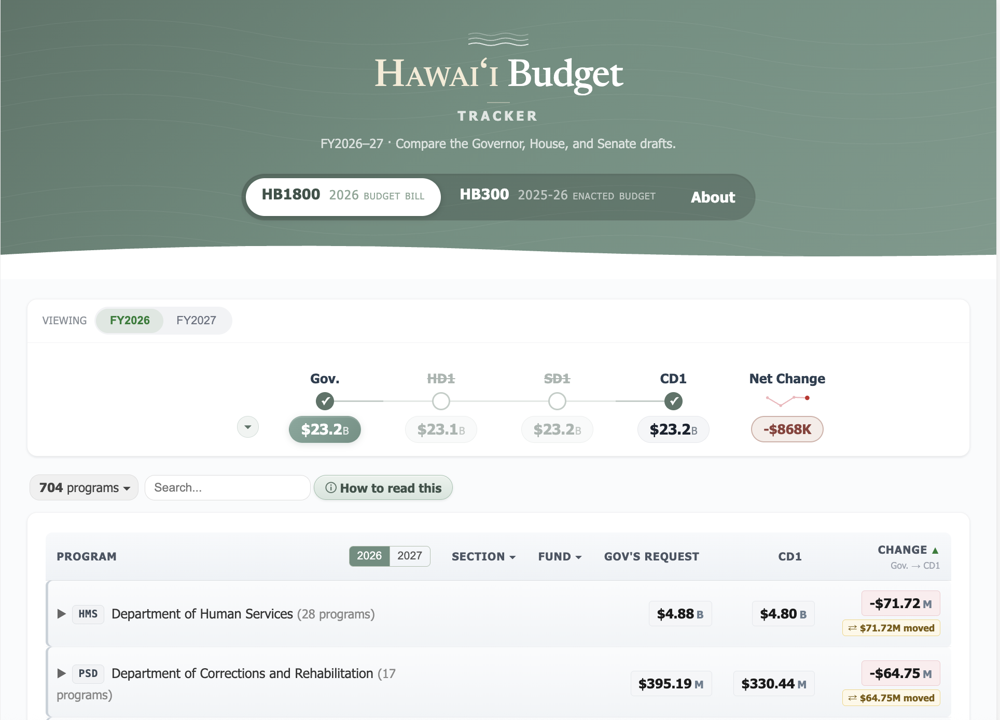
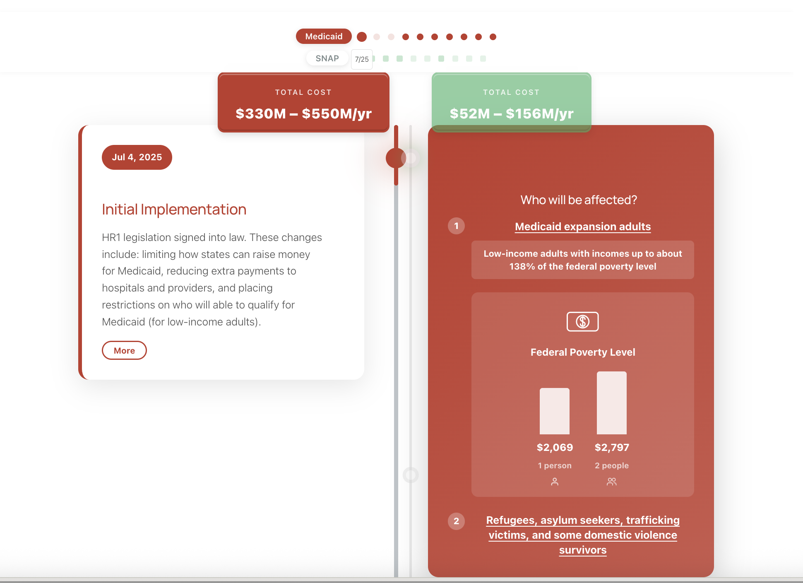
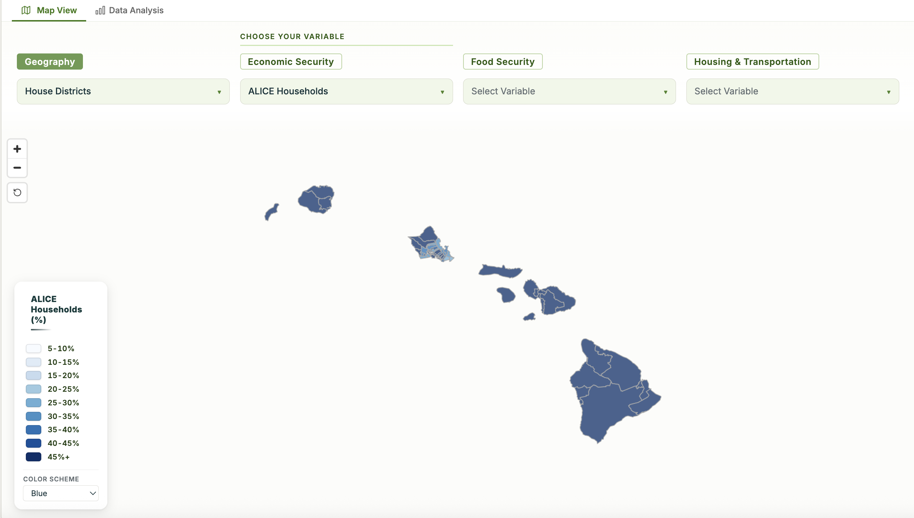

We advocate for systems change — in housing, food, transportation, and tax policy — so that every family in these islands can live, work, and raise kids here with dignity.
Hawaiʻi Appleseed is a nonpartisan, nonprofit law and policy center. We research the conditions holding local families back and advocate for the rules, budgets, and programs that can change them — at the Capitol, in the courts, and in community.
Since 2004, Hawaiʻi Appleseed has led policy wins on SNAP, the EITC, minimum wage, rent relief, and school meals — reaching hundreds of thousands of residents.
Read our 2026 priorities →Each of our issue areas addresses a cost squeezing local families — and each has concrete policy levers at the state and county level.
Hawaiʻi has the highest housing costs in the country and one of the nation's worst rates of homelessness. We push for zoning reform, public financing for permanently affordable homes, and stronger tenant protections to keep kūpuna and keiki housed.
Dig into the research behind our policy work. Each tool lets you explore Hawaiʻi's fiscal and social data directly.

Compare the Governor's, House's, and Senate's budget proposals side by side. Track program-level changes across all state departments.
Explore the data →
Track how federal policy changes affect Hawaiʻi residents' access to SNAP and Medicaid — with cost estimates and eligibility impacts.
Explore the data →
Explore ALICE household data, food insecurity, and economic security indicators mapped across Hawaiʻi's districts and counties.
Explore the data →